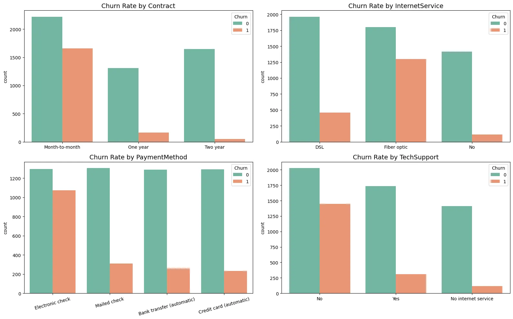
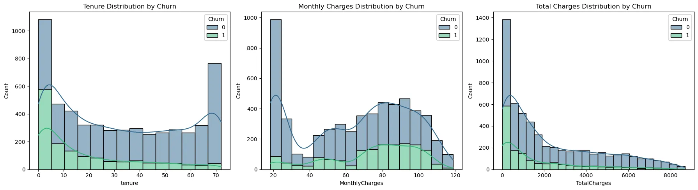
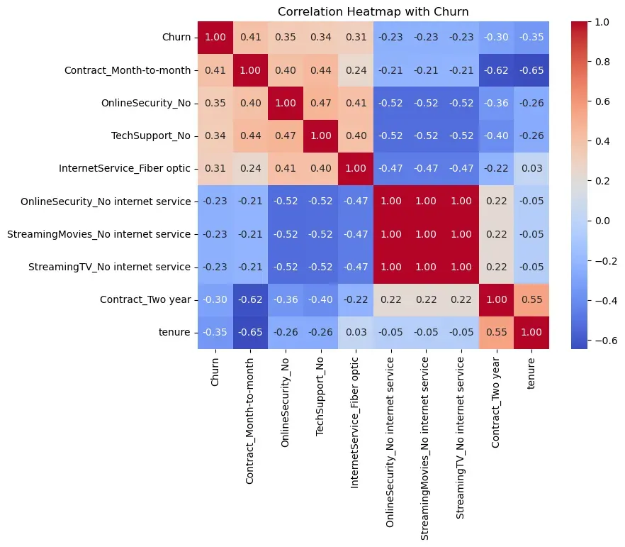
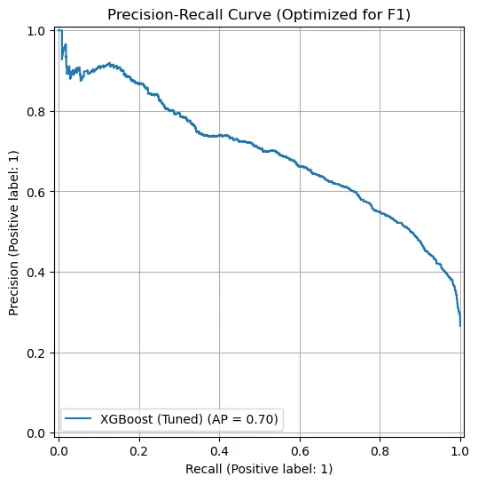
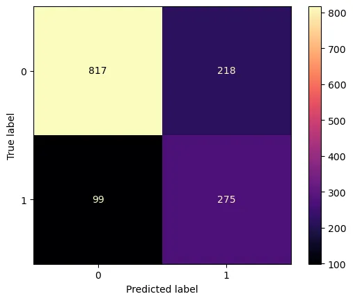
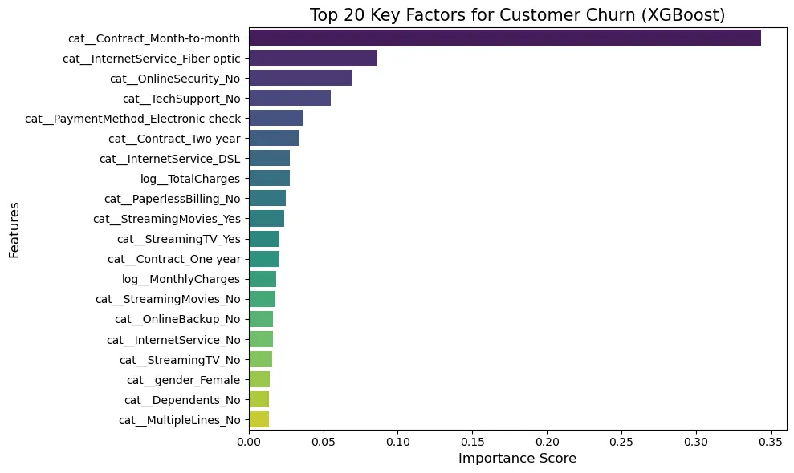

Project Report
Telco Customer Churn Prediction & Monitoring
1. 프로젝트 개요
1.1. 문제 정의 및 목표
본 프로젝트는 통신 회사의 고객 데이터를 분석하여 이탈 가능성이 높은 위험 고객군을 사전에 식별하는 것을 목표로 한다. 과거 데이터를 바탕으로 고객의 이탈 여부를 예측하는 지도 학습 기반의 이진 분류(Binary Classification) 문제이다. 이탈 가능성이 높은 고객을 찾아내어 적절한 시점에 방어 프로모션을 진행함으로써 고객 유지를 유도할 수 있다.
1.2. 평가 지표
본 프로젝트는 데이터의 클래스 불균형(Class Imbalance) 문제를 고려하여, 단순 정확도(Accuracy) 대신 Recall, Precision, F1-score를 핵심 성과 지표로 선정하였다.
일반적으로 Recall(재현율)을 높이면 실제 이탈 고객을 놓치지 않고 감지할 수 있으나, 동시에 이탈하지 않을 고객을 잘못 분류하여 불필요한 마케팅 비용이 발생할 위험이 있다. 따라서 이탈 방어 비용과 고객 상실에 따른 기회비용 간의 비교 분석을 통해 비즈니스 이익을 극대화하는 최적의 임계값(Threshold)을 설정해야 한다.
본 분석에서는 실제 이탈 고객을 놓쳤을 때의 손실 비용이 더 크다고 가정한다. 이에 따라 Precision보다는 Recall을 확보하는 데 가중치를 두되, 최종적으로 두 지표의 조화 평균인 F1-score가 높은 모델을 구축하는 것을 목표로 한다.
2. 데이터 개요
2.1. 데이터 출처 및 구조
본 프로젝트는 IBM Sample Data Sets에서 제공하는 통신사 고객 이탈 데이터(Telco Customer Churn)를 활용한다. 데이터셋은 총 7,043명의 고객에 대한 정보로 구성되어 있으며, 각 고객은 21개의 특성을 가진다.
2.2. 특성 설명
데이터 각 특성은 다음과 같다.
| 구분 | 변수명 (Feature) | 설명 (Description) | 데이터 타입 |
|---|---|---|---|
| 식별자 | customerID | 고객 고유 ID (분석 시 제외) | Object |
| Target | Churn | 이탈 여부 (지난달 기준 이탈 고객: Yes, 유지: No) | Object |
| 인구통계 | gender | 성별 (Male, Female) | Object |
| SeniorCitizen | 65세 이상 고령자 여부 (1: Yes, 0: No) | Int | |
| Partner | 배우자 유무 (Yes, No) | Object | |
| Dependents | 부양가족 유무 (Yes, No) | Object | |
| 계약정보 | tenure | 서비스 가입 기간 (개월 수) | Int |
| Contract | 계약 형태 (Month-to-month, One year, Two year) | Object | |
| PaperlessBilling | 청구서 발행 여부 (종이 없는 청구서: Yes, No) | Object | |
| PaymentMethod | 결제 수단 (전자 수표, 우편 수표, 계좌 이체, 신용카드) | Object | |
| 요금정보 | MonthlyCharges | 월별 청구 금액 | Float |
| TotalCharges | 가입 후 현재까지의 총 청구 금액 | Object* | |
| 서비스 | PhoneService | 전화 서비스 가입 여부 (Yes, No) | Object |
| MultipleLines | 다중 회선 사용 여부 (Yes, No, No phone service) | Object | |
| InternetService | 인터넷 서비스 제공자 (DSL, Fiber optic, No) | Object | |
| OnlineSecurity | 온라인 보안 서비스 가입 여부 | Object | |
| OnlineBackup | 온라인 백업 서비스 가입 여부 | Object | |
| DeviceProtection | 기기 보험 가입 여부 | Object | |
| TechSupport | 기술 지원 서비스 가입 여부 | Object | |
| StreamingTV | TV 스트리밍 서비스 이용 여부 | Object | |
| StreamingMovies | 영화 스트리밍 서비스 이용 여부 | Object |
3. EDA
3.1. 데이터 분포 확인
Catergorical 특성

Categorical 특성을 통해 고객 이탈은 주로 계약 기간, 서비스 종류, 결제 방식에 의해 크게 좌우되는 것으로 나타났다.
가장 두드러진 특징은 계약 기간(Contract)이다. Month-to-month 단기 계약 고객의 이탈률이 압도적으로 높아, 단기 가입자가 장기 약정으로 전환하도록 유도하는 프로모션이 이탈 방어의 핵심 열쇠가 될 것이다.
또한, 인터넷 서비스(InternetService) 측면에서는 Fiber optic 이용자가 DSL 이용자보다 오히려 더 많이 이탈하는 경향을 보였다. 이는 해당 서비스의 가격 경쟁력 부족이나 품질 불만족 가능성을 있으므로, 서비스 만족도 조사가 실시되어야 한다.
마지막으로 결제 수단(PaymentMethod)에서는 Electronic check 이용자의 높은 이탈률이 관찰되었다. 이는 결제 과정의 불편함이나 해당 방식을 선호하는 고객군의 고유한 특성(높은 가격 민감도 등)에 기인한 것으로 추정되며, 이에 대한 추가적인 고객 세분화 분석이 필요하다.
Numerical 특성

수치형 변수의 분포를 분석한 결과, 각 변수에서 뚜렷한 특징과 그에 따른 전처리의 필요성이 확인되었다.
가입 기간(Tenure)은 양쪽 끝의 빈도가 높은 U자형 분포를 보인다. 이는 신규 고객과 장기 고객이 많은 분포를 차지하고 있음을 의미한다. 특히 초기 1~2개월의 높은 이탈률은 서비스 초기 경험에 문제가 있을 가능성을 보여준다. 따라서 가입 초기 고객의 이탈을 방지하는 Onboarding 프로그램과 장기 고객 유지를 위한 전략이 동시에 수행되어야 한다.
또한 월 청구 금액(MonthlyCharges)는 약 $20의 구간과 $70 ~ $100 사이의 구간에 데이터가 몰려 있는 다봉 분포의 형태이다. 이는 고객층이 기본 서비스만 이용하는 그룹과 여러 서비스를 함께 이용하는 그룹으로 세분화되었음을 보여준다. 두 그룹은 이탈을 결정하는 요인이 다를 것으로 추정된다.
마지막으로 총 청구 금액(TotalCharges)는 왼쪽으로 치우치고 오른쪽으로 긴 꼬리를 가진 형태를 보인다. 이런 분포는 데이터의 분산을 불안정하게 만들며 모델 학습에 악영향을 미친다. 따라서 로그 변환을 적용하여 데이터 분포를 정규 분포에 근사시켜야 한다.
3.2. 변수 간 상관관계 및 인사이트 도출

이탈을 촉진하는 양의 상관관계
이탈(Churn)과 양의 상관관계를 보이는 변수들을 분석한 결과, 계약 형태, 부가 서비스 유무, 인터넷 상품 종류가 이탈에 주된 영향을 미치는 것으로 나타났다.
가장 강력한 이탈 요인은 월 단위 계약(Contract_Month-to-month, 0.41)이다. 계약 기간이 짧은 고객들은 쉽게 서비스를 해지할 수 있어 이탈 위험이 높다. 이를 장기 계약으로 유도하는 방법이 필요하다.
또한, 부가 서비스 미사용(OnlineSecurity_No: 0.35, TechSupport_No: 0.34**)** 역시 이탈과 밀접한 관련이 있다. 보안이나 기술 지원 등 부가 서비스를 이용하지 않는 고객은 서비스 의존도가 낮기 때문이다. 따라서 결합 상품 판매를 통해 고객을 서비스 생태계에 안착시키는 노력이 필요하다.
특이한 점은 고속 인터넷인 광섬유(Fiber optic, 0.31) 이용자의 이탈률이 높다는 것이다. 고속 인터넷인 Fiber optic을 사용함에도 불구하고 이탈을 유도한다. 이는 해당 서비스의 요금에 대한 불만이 있거나 품질에 문제가 있을 수도 있다.
이탈을 억제하는 음의 상관관계
이탈(Churn)과 음의 상관관계가 높다는 것은 해당 특성을 가진 고객일수록 이탈할 확률이 낮음을 의미한다.
우선, 가입 기간(tenure, -0.35)이 중요한 억제 특성으로 작용했다. 가입 기간이 길어질수로 이탈률이 낮아지는 경향을 보여준다. 이는 충성 고객층이 형성되어 있음을 의미하며, 신규 고객의 초기 정착 지원이 중요함을 다시 알려준다.
또한, 년 단위 계약(Contract_Two year, -0.30)도 이탈을 억제했다. 2년 약정 고객은 이탈 가능성이 낮다. 이는 단기 계약 고객을 장기 계약으로 전환시키는 유인책이 가장 효과적인 이탈 방지 전략이 될 수 있다.
다중공선성 (Multicolinearity)
히트맵 분석을 통해 변수 간의 다중공선성 문제가 확인되었다.
OnlineSecurity, StreamingTV, TechSupport 등의 변수 내에서 'No internet service' 항목들은 서로 상관계수 1.00을 기록하며 완벽하게 일치한다. 이는 사실상 동일한 정보를 담고 있음을 의미한다. 이러한 다중공선성은 모델 학습 시 불필요한 연산량을 증가시키고 과적합을 유발할 수 있다. 따라서 전처리 단계에서 해당 변수들을 통합하거나 대표 변수만 남기는 특성 선택(Feature Selection) 과정이 필요하다.
4. 데이터 전처리
4.1. 전처리 전략 및 주요 기법
다중공선성 해결 및 차원 축소
OnlineSecurity, TechSupport 부가 서비스 변수에서 'No internet service'라는 값은 InternetService 변수의 'No' 값과 완벽한 상관관계(Correlation=1.0)를 가진다. 이는 모델 학습 시 불필요한 연산량을 증가시키고 다중공선성 문제를 야기한다. 따라서 해당 값들을 모두 ‘No’로 통일하여 정보의 중복을 제거한다. 이를 통해 원-핫 인코딩 시 생성되는 특성의 수를 줄이고 모델의 과적합을 낮춘다. 이를 위해 사용자 정의 변환기(ServiceValueSimplifier)를 구현하여 적용한다.
Numerical 특성의 분포 보정
TotalCharges 변수는 오른쪽으로 꼬리가 긴 양의 왜도 분포를 보인다. 이러한 치우친 데이터는 선형 모델이나 거리 기반 알고리즘의 성능을 저하시킬 수 있다. 따라서 데이터의 분포를 정규 분포에 가깝게 만들기 위해 로그 변환을 적용한다. 이후 StandardScaler를 통해 모든 수치형 변수의 스케일을 평균 0, 분산 1로 통일한다.
Categorical 특성 인코딩
모델이 해석할 수 있도록 모든 Categorical 특성에 대해 One-Hot Encoding을 수행한다.
4.2. Pipeline 구축
앞서 수립한 전처리 전략을 자동화하고, 학습 데이터셋과 테스트 데이터셋에 동일한 변환을 적용하기 위해 Scikit-Learn의 Pipeline을 구축하였다.
사용자 정의 변환기
다중공선성 해결을 클래스를 정의한다.
class ServiceValueSimplifier(BaseEstimator, TransformerMixin):
"""
Custom Transformer to simplify redundant categorical values.
Example: Merges 'No internet service' into 'No' for cleaner categories.
"""
def fit(self, X, y=None):
return self
def transform(self, X):
X = X.copy()
# List of columns that contain redundant 'No service' categories
cols_to_fix = [
'OnlineSecurity', 'OnlineBackup', 'DeviceProtection',
'TechSupport', 'StreamingTV', 'StreamingMovies', 'MultipleLines'
]
for col in cols_to_fix:
if col in X.columns:
X[col] = X[col].replace({'No internet service': 'No', 'No phone service': 'No'})
return X
전처리 파이프라인
Numerical, Categorical, Log 변환 데이터를 각각 처리하는 파이프라인을 ColumnTransformer로 결합하고, 앞서 정의한 ServiceValueSimplifier를 가장 앞에 배치하여 최종 전처리 파이프라인을 완성한다.
# Categorical Pipeline: Impute missing values -> One-Hot Encode
cat_pipeline = make_pipeline(
SimpleImputer(strategy='most_frequent'),
OneHotEncoder(handle_unknown='ignore', drop='if_binary')
)
# Numerical Pipeline: Impute missing values -> Standard Scale (Z-score)
num_pipeline = make_pipeline(
SimpleImputer(strategy='median'),
StandardScaler()
)
# Log-Transform Pipeline: For skewed features (e.g., TotalCharges)
# Impute -> Log(x+1) -> Standard Scale
log_pipeline = make_pipeline(
SimpleImputer(strategy='median'),
FunctionTransformer(np.log1p, feature_names_out="one-to-one"),
StandardScaler()
)
# Combine all preprocessing steps using ColumnTransformer
preprocessor = ColumnTransformer([
("cat", cat_pipeline, cat_features),
("num", num_pipeline, num_features),
("log", log_pipeline, log_features)
], remainder='drop')
# Assemble the final pipeline
full_pipeline = Pipeline([
("simplifier", ServiceValueSimplifier()),
("preprocessing", preprocessor)
# ("model", classifier())
])
5. 모델링 및 최적화
5.1. 모델 선정
본 프로젝트에서는 XGBoost (Extreme Gradient Boosting) 분류기를 모델로 선정하였다. 선정 근거는 다음과 같다.
XGBoost는 Gradient Boosting 알고리즘을 병렬 처리와 최적화 기법으로 개선한 모델로, 정형 데이터(Tabular Data) 분류 문제에서 타 알고리즘(Random Forest, SVM 등) 대비 우수한 성능을 보인다. 또한 이탈 데이터(Positive)가 전체의 약 27%에 불과한 불균형 문제를 해결하기 위해, 손실 함수 가중치 파라미터인 scale_pos_weight를 조정할 수 있다. 이를 통해 소수 클래스인 '이탈 고객'에 대한 학습 강도를 높여 Recall(재현율) 성능을 확보한다. L1(Lasso), L2(Ridge) 규제 항이 목적 함수에 포함되어 있어, 복잡한 패턴을 학습하면서도 과적합 위험을 최소화할 수 있다.
# Initialize the XGBoost Classifier
xgb_clf = XGBClassifier(
use_label_encoder=False,
eval_metric='aucpr', # Area Under the Precision-Recall Curve
random_state=42,
n_jobs=-1
)
전처리와 모델을 포함한 최종 파이프라인은 다음과 같다.
# Combine the custom transformer and preprocessing pipeline into a full pipeline
full_pipeline = Pipeline([
("simplifier", ServiceValueSimplifier()),
("preprocessing", preprocessor),
("XGBClassifier", xgb_clf)
])
5.2. 하이퍼파라미터 튜닝
모델의 성능을 최적화하기 위해 GridSearchCV를 활용하여 하이퍼파라미터 튜닝을 수행하였다.
평가 지표로는 단순 정확도가 아닌 Recall과 Precision의 조화 평균인 F1-score를 최적화 기준으로 선정하였다. 또한 데이터의 편향을 방지하고 결과의 신뢰성을 높이기 위해 10-Fold Cross Validation을 적용하였다. 튜닝을 진행할 주요 파라미터는 다음과 같다.
- scale_pos_weight: 불균형 데이터 처리를 위한 파라미터로 1부터 3까지 탐색하여 Precision과 Recall의 최적 균형점을 찾는다.
- n_estimators, learning_rate: 모델의 복잡도와 학습 속도를 제어한다.
- max_depth: 트리의 깊이를 제어하여 과적합을 방지한다.
# Define Hyperparameter Search Grid
param_grid = [
{
# Control model complexity and size
'XGBClassifier__n_estimators': [100, 300, 500, 700, 900],
'XGBClassifier__max_depth': [3, 5, 7, 9],
'XGBClassifier__learning_rate': [0.01, 0.1, 0.2],
# Regularization via subsampling
'XGBClassifier__subsample': [0.6, 0.8, 1.0],
# Handle Class Imbalance (Critical for Churn Prediction
'XGBClassifier__scale_pos_weight': [1, 2, 3]
}
]
# Initialize Grid Search with Cross-Validation
grid_search = GridSearchCV(
estimator=full_pipeline,
param_grid=param_grid,
scoring='f1',
cv=10,
n_jobs=-1,
verbose=1
)
5.3 튜닝 결과 및 최적 파라미터
총 540개의 파라미터 조합에 대해 10-Fold 교차 검증을 수행(총 5,400회 학습)한 결과, 가장 우수한 일반화 성능을 보인 최적의 파라미터 조합을 도출하였다.
최적 파라미터 및 성능
Best F1-Score (CV Mean): 0.6434
파라미터 (Parameter) 선정 값 (Value) 의미 및 해석 (Interpretation)
| scale_pos_weight | 2 | 이탈 고객(Positive)을 일반 고객보다 2배 더 중요하게 가중치를 부여함. 불균형 데이터 상황에서 Recall을 확보하기 위한 핵심 설정이 유효했음을 입증. |
| max_depth | 3 | 트리의 깊이를 얕게 설정하여 과적합(Overfitting)을 억제하고, 일반화된 패턴 학습에 집중함. |
| learning_rate | 0.01 | 매우 낮은 학습률을 선택하여, 급격한 학습보다는 조금씩 오차를 줄여나가는 안정적인 학습 방식을 채택함. |
| n_estimators | 500 | 낮은 학습률(0.01)을 보완하기 위해 트리의 개수를 500개로 충분히 늘려 학습량을 확보함. |
| subsample | 0.6 | 학습 시 데이터의 60%만 무작위로 샘플링하여 다양성을 확보하고 과적합을 방지함. |
결과 분석
도출된 파라미터(max_depth: 3, learning_rate: 0.01)를 볼 때, 모델은 복잡하고 예민한 경계면을 그리기보다는 보수적이고 안정적인 예측을 선호하는 것으로 나타났다. 특히 scale_pos_weight가 2로 설정된 것은 단순 정확도보다는 실제 이탈할 고객을 놓치지 않는 것(Recall)이 성능 향상에 더 기여했음을 보여준다.

6. 결과 및 분석
6.1. 최종 성능 평가
테스트 데이터셋 평가
precision recall f1-score support
No 0.89 0.78 0.83 1035
Yes 0.55 0.75 0.63 374
accuracy 0.77 1409
macro avg 0.72 0.76 0.73 1409
weighted avg 0.80 0.77 0.78 1409
이탈 클래스(Yes)에 대한 예측 성능을 상세히 살펴보면, Precision은 0.55, Recall은 0.75, 그리고 이에 따른 조화 평균인 F1-score는 0.63을 기록했다. 이 결과는 프로젝트 초기 단계에서 목표로 했던 Recall 중심의 전략이 성공적으로 작동했음을 보여준다. 고객 이탈 예측 과제에서는 실제 이탈할 고객을 놓치는 비용(False Negative Cost)이, 이탈하지 않을 고객에게 마케팅 비용을 지출하는 비용(False Positive Cost)보다 훨씬 치명적이다. 따라서 비록 정밀도(Precision)가 다소 낮아 불필요한 비용이 발생하더라도 실제 이탈 고객의 75%를 사전에 감지해낼 수 있다는 점은 유의미한 성과라고 평가할 수 있다.
상세 분석
첨부된 혼동 행렬(Confusion Matrix)을 통해 모델의 예측 패턴을 더 세밀하게 분석할 수 있다.

- 놓친 이탈자 (False Negative: 99명): 실제로는 서비스를 이탈했으나, 모델이 '이탈하지 않음(0)'으로 잘못 예측한 케이스가 99건 발생했다. 이는 모델이 감지하지 못해 아무런 조치 없이 잃어버린 고객을 의미한다. 전체 실제 이탈자(374명) 중 약 26%에 해당하며, 이후 모델 보수 시 이 숫자를 줄이는 것이 중요하다.
- 방어 기회 확보 (True Positive: 275명): 실제 이탈자를 모델이 정확하게 '이탈(1)'로 예측한 케이스는 275건이다. 모델을 도입함으로써 우리는 275명의 잠재적 이탈 고객에게 선제적으로 프로모션을 제공할 기회를 얻었다. 이는 놓친 고객(99명) 대비 약 2.8배 많은 수치로, 모델의 유효성을 보여준다.
- 과잉 탐지 (False Positive: 218명): 실제로는 이탈하지 않았으나, 모델이 '이탈할 것(1)'이라고 예측하여 경보를 울린 케이스이다. 이들에게는 불필요한 마케팅 비용이 필요할 수 있다. 하지만 이탈 방지 마케팅(예: 할인 쿠폰, 안부 문자)은 고객 만족도를 높이는 긍정적 효과도 동반하므로, 이를 '실패'보다는 '적극적 방어 비용'으로 해석하는 것이 타당하다.
6.2. 특성 중요도
모델이 고객의 이탈을 예측할 때 어떤 특성이 가장 큰 영향을 미쳤는지 분석한 결과이다.

- cat__Contract_Month-to-month:
- EDA 단계에서 관찰되었던 '계약 형태'의 영향력이 모델 학습 결과에서도 압도적인 1위 중요도로 검증되었다. 2위 변수보다 약 2배 이상의 중요도 점수를 기록했다. 이는 다른 어떤 변수보다도 '계약 기간'을 관리하는 것이 이탈 방어에 있어 최우선 과제임을 보여준다.
- cat__InternetService_Fiber optic:
- Fiber optic 특성은 이탈 여부를 학습하는 모델에 큰 영향을 미친다. 이는 해당 서비스 사용자 그룹 내에 이탈을 유발하는 가격 저항성 또는 품질 이슈 등이 존재함을 알고리즘이 포착했음을 의미한다.
- cat__OnlineSecurity_No, cat__TechSupport_No:
- 개별 서비스의 가입 여부도 중요하지만, 모델은 결합 상품이 없는 고객을 위험군으로 분류했습니다. 이는 “결합 상품이 이탈 확률을 수학적으로 낮춘다"는 가설이 입증된 것이다.
7. 결론
7.1. 비즈니스 임팩트 및 한계점
본 프로젝트는 고객 데이터를 기반으로 XGBoost 머신러닝 모델을 구축하여 고객 이탈(Churn)을 사전 예측하고, 주요 이탈 요인을 알아내는 데 성공했다. 최종 분석 결과에 따른 비즈니스 임팩트와 본 모델의 한계점은 다음과 같다.
선제적 이탈 방어를 통한 매출 손실 최소화
모델은 전체 이탈 고객의 약 75%(Recall)를 사전에 감지해 냈다. 이는 기존에 사후 대응에 의존하던 방식에서 벗어나, 고객이 떠나기 전 선제적으로 개입할 수 있는 기회를 확보했음을 의미한다. 이탈 고위험군으로 식별된 고객 275명(Test set 기준)을 대상으로 프로모션을 진행할 경우, 상당수의 고객의 이탈을 막아 매출(LTV)을 보존할 수 있다.
마케팅 비용 효율화 및 타겟팅 정교화
무작위 마케팅이 아닌, 이탈 확률이 높은 고객에게만 자원을 집중함으로써 마케팅 투자 대비 효율를 극대화할 수 있다. 특히 '월 단위 계약자(Month-to-month)'와 '미결합 상품 보유자'가 핵심 타겟임이 밝혀졌다. 이들에게 장기 계약 할인이나 결합 상품을 제안하는 맞춤형 프로모션을 통해 마케팅 성공률을 높일 수 있다.
서비스 상품 전략 개선의 근거 마련
Fiber optic 사용자의 높은 이탈률은 서비스 품질 점검이나 요금제 개편이 시급함을 보여준다. 데이터가 지목한 이 문제를 해결함으로써 서비스 전반의 경쟁력을 강화할 수 있다.
7.2. 한계점 및 향후 과제
모델의 성능을 해석할 때 고려해야 할 제약 사항과 이를 보완하기 위한 개선 방향이다.
Precision의 한계와 비용 이슈
이탈 Recall을 높이는 전략을 취함에 따라, Precision은 0.55로 다소 낮게 나타났다. 모델이 이탈할 것이라고 예측했으나 실제로는 잔존한 고객에 대한 마케팅 비용 지출이 발생할 수 있다. 이를 보완하기 위해 마케팅 비용이 적게 드는 방식을 활용하거나, 이탈 확률 구간(Probability Threshold)별로 차별화된 혜택을 제공하는 전략이 필요하다.
정석적 데이터의 부제
현재 모델은 계약 정보, 결제 내역 등 정량적 데이터에 기반하고 있다. 고객의 불만 접수 내용, 상담 내역, 통화 품질 로그 등 직접적인 고객의 목소리가 반영되지 않았다. 이후 텍스트 마이닝(NLP) 등을 통해 상담 내용을 특징으로 추가한다면 이탈의 '징후'뿐만 아니라 구체적인 '원인'까지 더 정확히 파악할 수 있다.
7.3. 모델 운영 및 유지보수 전략
단발성 분석을 넘어, 지속 가능한 모델 운영을 위한 파이프라인 구축 계획이다.
[ START: MLOps Pipeline ]
│
▼
[ 1. Data Loading ]
(Load CSV & Simulate Drift)
│
▼
[ 2. Drift Detection ] <────── (Evidently AI)
│
Drift Detected?
├── [NO] ───────────────────────────> [ End Process ]
│ (Stable Data)
▼ [YES]
[ 3. Generate Report ] (Save .html)
│
▼
[ 4. Retraining Loop ]
│
├── Data Merge (Ref + Curr)
├── Stratified Split (Train/Test)
└── GridSearch CV (XGBoost Tuning)
│
▼
[ 5. Model Evaluation ] (Test Set)
│
▼
[ Quality Gate ]
Recall ≥ 0.7 AND F1 ≥ 0.6 ?
├── [NO] ───────────────────────────> [ ❌ Abort ]
│ (Log Failure Reason)
▼ [YES]
[ 💾 Save Model ]
(timestamped.pkl)
데이터 드리프트(Data Drift) 대응을 위한 모니터링 체계
본 프로젝트에서는 모델의 성능 저하를 방지하고 지속적인 성능 유지를 위해 Evidently AI 라이브러리를 활용한 데이터 드리프트(Data Drift) 감지 모듈을 구현하였다. 구현된 check_data_drift 함수는 학습에 사용된 기준 데이터(Reference Data)와 새로 유입된 현재 데이터(Current Data)의 분포 차이를 통계적으로 검정한다.
시스템은 두 단계로 작동한다. 첫째, DataDriftPreset을 사용하여 데이터셋의 전반적인 드리프트 여부를 분석하고, 그 결과를 시각화된 HTML 리포트로 생성하여 reports/ 디렉토리에 timespamp와 함께 저장한다. 이를 통해 데이터 과학자는 직관적으로 데이터의 변화 양상을 파악할 수 있다.
둘째, 리포트의 내부 수치를 프로그래밍 방식으로 파싱(Parsing)하여 자동화된 의사결정을 수행한다. 각 특성 별 Drift 점수가 사전 정의된 임계값(Threshold)을 초과하는지 검사하며, 유의미한 드리프트가 감지될 경우 True를 반환하여 재학습 파이프라인(Retraining Pipeline)을 자동으로 트리거하도록 설계하였다. 이는 사람의 개입 없이도 데이터 변화에 신속하게 대응할 수 있게 한다.
def check_data_drift(ref_data, curr_data):
"""
Detects data drift between the reference and current datasets using Evidently AI.
It generates an HTML report visualizing the drift and returns a boolean
indicating if significant drift was found based on statistical tests.
Args:
ref_data (pd.DataFrame): The baseline data used for training the original model.
curr_data (pd.DataFrame): The new batch of data to check against the baseline.
Returns:
bool: True if drift is detected in any feature, False otherwise.
"""
# Initialize the drift report using the DataDriftPreset
drift_report = Report(metrics=[
DataDriftPreset()
])
# Run the report calculation
report = drift_report.run(reference_data=ref_data, current_data=curr_data)
# Generate a timestamped filename for the report
timestamp = datetime.now().strftime("%Y%m%d_%H%M%S")
filename = f"drift_report_{timestamp}.html"
if not os.path.exists('reports/'):
os.makedirs('reports/')
save_path = os.path.join('reports/', filename)
# Save the visual HTML report
report.save_html(save_path)
print("Drift report saved to \\"{}\\".\\n".format(save_path))
# Parse the report dictionary to programmatically check for drifted features
report_dict = report.dict()
drifted_features = []
for item in report_dict['metrics']:
if 'column' in item['config']:
column = item['config']['column']
method = item['config']['method']
score = item['value']
threshold = item['config']['threshold']
# If the drift score exceeds the threshold, record it
if score > threshold:
drifted_features.append({
'Column': column,
'Drift Score': round(score, 4),
'Threshold': threshold,
'Method': method
})
# Display results
df_result = pd.DataFrame(drifted_features)
if not drifted_features:
print("No drift detected in any feature.")
return False # No retraining required
else:
print("Drift detected in the following features:")
print(df_result)
return True # Retraining required
재학습 파이프라인 구축
드리프트가 감지되면 시스템은 데이터 병합, 전처리, 모델 튜닝으로 이어지는 재학습 과정을 수행한다. 먼저 기준 데이터(Reference Data)와 새로 유입된 현재 데이터(Current Data)를 병합하여 새로운 데이터를 생성한다. 이후 데이터 전처리 단계에서는 수치형 변수의 결측치 처리 및 스케일링, 범주형 변수의 원-핫 인코딩 등을 일관성 있게 처리한다. 모델링 단계에서는 XGBoost 알고리즘을 채택하였으며, GridSearchCV를 통해 최적의 하이퍼파라미터를 탐색한다.
시스템의 가장 큰 특징은 재학습된 모델을 무조건 배포하는 것이 아니라 품질 검증 단계를 거친다는 점이다. 테스트 데이터셋을 통하여 모델을 평가하고 Recall 0.7 이상, F1-Score 0.6 이상이라는 두 가지 기준을 동시에 충족할 때만 해당 모델을 새로운 모델로 승인한다. 기준을 통과한 모델은 파일로 저장되어 서비스에 배포된다. 기준에 미달할 경우 해당 모델은 폐기된다.